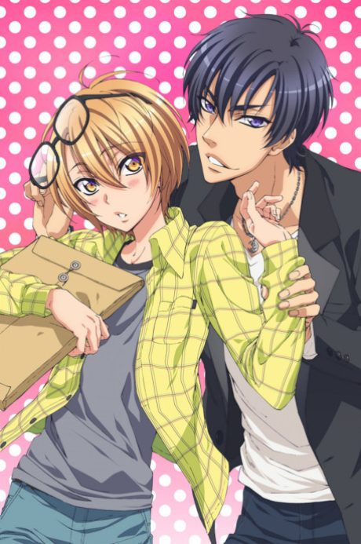

LOVE STAGE!!
LOVE STAGE!!
Izumi, an otaku from a family of celebrities, is cast as a bride in a commercial, and the male actor beside him falls for him.
We haven't found where the anime ends in the manga yet.
6.6AniList score
—Animeter, no votes yet
10episodes
Rate it or report where you stopped
Anime finished. Where does the manga pick up?
StatusNo source yet
We looked for where the anime ends in the manga but found no source we trust yet. The manga is 43 chapters, finished.
More like LOVE STAGE!!
 Manga Ch. 787.2
Manga Ch. 787.2
 Manga Ch. 338.1
Manga Ch. 338.1
 Unclear8.1
Unclear8.1
 Manga Ch. 227.9
Manga Ch. 227.9
 Manga Ch. 367.6
Manga Ch. 367.6
 Manga Ch. 408.3
Manga Ch. 408.3
 Film8.1
Film8.1
 Unclear7.0
Unclear7.0
 Manga Ch. 868.0
Manga Ch. 868.0
 Manga Ch. 368.0
Manga Ch. 368.0
 Film7.7
Film7.7
 Manga Ch. 706.6
Manga Ch. 706.6